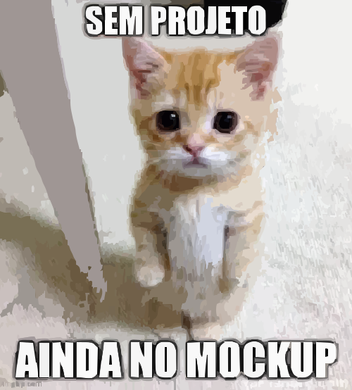

Sobre Mim
Sou Anthony, um PCD autista apaixonado por tecnologia. Tenho experiência em Java, Spring Boot e Python com Manim. Atualmente estudo Kotlin e curso Análise e Desenvolvimento de Sistemas na Universidade Potiguar desde 2024.
Formação Acadêmica
- 🔹 Programação de Soluções Computacionais – 04/07/2024
- 🔹 Modelagem de Software – 04/07/2024
- 🔹 Sistemas Computacionais e Segurança – 18/12/2024
- 🔹 Ambientes Computacionais e Conectividade (Cisco) – 18/12/2024
Projetos
🎮 Jogo Plataformer
Um jogo de plataforma desenvolvido com JavaFX durante meus primeiros estudos em Java.
🏦 Sistema Bancário
Aplicação desktop em Java com Swing que simula operações bancárias básicas.
📚 Biblioteca Virtual
Sistema web criado com Spring Boot e Thymeleaf, com integração à API OpenLibrary.
🤗 HugMeBot
Bot Discord em desenvolvimento para gerenciar doações via PIX e cartão, atribuindo cargos automaticamente aos apoiadores. Backend em Python com FastAPI e PostgreSQL.
🐋 Deepseek-CLI
Assistente de linha de comando para interagir com a API DeepSeek. Permite carregar projetos e responder perguntas inteligentes diretamente no terminal.
📖 "Livrai-me"
Contato
📧 Email: anthonyluciano.dev@gmail.com
🐙 GitHub: github.com/AnthonyLuciano
💼 LinkedIn: linkedin.com/in/anthony-luciano-dev/